Rapporto sulla congiuntura

Macroprospettive in breve
Globale: dallo shock petrolifero allo shock dei tassi d’interesse
L’aumento dei prezzi dell’energia ha spinto l’inflazione e frenato la crescita.
Con l’aumento dei tassi, è probabile che le condizioni di finanziamento più rigide diventino un freno alla crescita.
USA: Consumi robusti ma prudenti
Il mercato del lavoro è sorprendentemente forte e i consumi rimangono solidi. Se l’inflazione rimarrà persistente, l’aumento dei tassi d’interesse potrebbe indebolire i consumi e frenare la crescita.
Eurozona: i problemi strutturali incontrano il freno dei tassi
I rialzi dei tassi di riferimento già scontati incontrano un’economia già indebolita. Standard di prestito restrittivi ed elevati costi energetici rafforzano le debolezze strutturali esistenti.
Cina: la politica sostiene un’economia interna debole
Le politiche monetarie e fiscali espansive stabilizzano l’economia, mentre il mercato immobiliare e la domanda interna rimangono deboli. La dinamica delle esportazioni continua, ma i rischi geopolitici rendono la crescita vulnerabile.
Freno alla crescita: tassi di interesse?

ECONOMIA REALE
Crescita

USA ed Eurozona: Shock del prezzo del petrolio

A maggio, la situazione aziendale negli USA è rimasta positiva, mentre è peggiorata ulteriormente nell’Eurozona. L’Indice dei direttori degli acquisti (PMI) misura l’attuale situazione aziendale e le aspettative a breve termine delle imprese. È superiore a 50 se più imprese segnalano un miglioramento rispetto a un peggioramento. Nell’Eurozona, il PMI è sceso a 48,5, poiché il settore dei servizi in particolare ha subito una forte contrazione. Negli USA, è sceso leggermente a 51,5. In Cina, il PMI ufficiale NBS è stato di 50,5, mentre il PMI privato RatingDog è salito a 54 ed è rimasto volatile.
Eurozona: Settore dei servizi debole


Il settore dei servizi nell’Eurozona ha continuato a indebolirsi, mentre la situazione aziendale nell’industria è leggermente calata ma è rimasta in territorio espansivo. Il PMI dei servizi è sceso a 47,7 a maggio, appesantito dal forte aumento dei prezzi dell’energia e dalle interruzioni dei viaggi. Il PMI manifatturiero è sceso leggermente a 51,6. Negli USA, il settore dei servizi è rimasto stabile con un PMI di 50,7, mentre l’industria ha continuato a espandersi con 55,1.
Germania e Francia con prospettive cupe


In Germania e in Francia la situazione aziendale è ulteriormente peggiorata. Il PMI dei servizi a maggio è stato di 48,8 in Germania e di 44,3 in Francia. Anche i PMI manifatturieri sono calati. Se torneranno a salire nel prossimo mese dipenderà probabilmente ancora dall’andamento dei prezzi dell’energia.
La produzione industriale tedesca continua a contrarsi
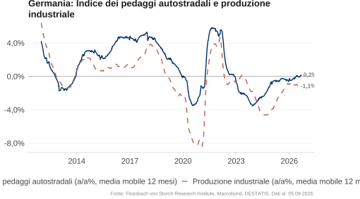
L’indice del chilometraggio dei camion soggetti a pedaggio, che misura il chilometraggio dei camion sulle autostrade ed è considerato un indicatore anticipatore della produzione industriale, si è sensibilmente ripreso dopo la lunga fase di debolezza dal 2024, ma non mostra alcuna crescita nella media annuale. La produzione industriale segue questo andamento e cala meno drasticamente rispetto al 2025. Tuttavia, la leggera ripresa è probabilmente già terminata. Una crescita della produzione industriale non è attualmente in vista.
Cina: economia interna debole

Gli indici dei direttori degli acquisti per maggio 2026 delineano un quadro contrastante. Il PMI ufficiale NBS, che rileva soprattutto le imprese più grandi e orientate al mercato interno, è stato di 50,0 nell’industria e di 50,3 nel settore dei servizi. Al contrario, il PMI privato RatingDog, più orientato all’esportazione, è rimasto più alto e volatile a 51,8 (industria) e 54,4 (servizi). La divergenza continua a riflettere la debolezza del mercato interno rispetto all’economia d’esportazione.
L’attività edilizia non si riprende

Il numero di nuove costruzioni avviate è calato ulteriormente a marzo ed è al di sotto del livello del 2010 dal 2022. Ciò si riflette anche nel numero di immobili non ultimati e completati, anch’essi in forte calo.
Condizioni di finanziamento

Banche USA: prestiti restrittivi per le imprese
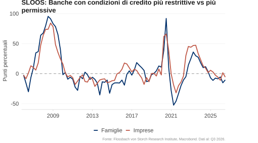
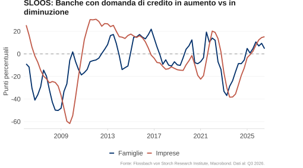
L’indagine SLOOS di aprile 2026 mostra che più banche hanno inasprito i propri standard creditizi per le imprese rispetto a quelle che li hanno allentati (valore leggermente positivo). La maggior parte delle banche intervistate ha riferito una domanda di credito più forte negli ultimi tre mesi (valore positivo).
Condizioni di credito restrittive nell’Eurozona
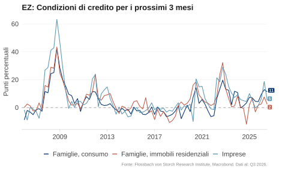
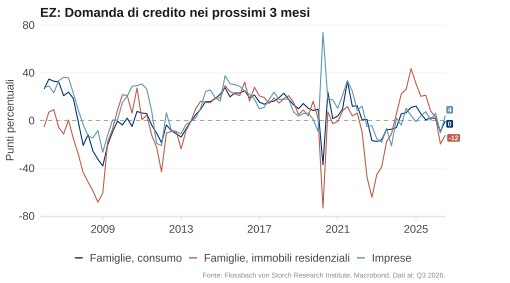
Secondo la Bank Lending Survey (BLS) della BCE per il secondo trimestre del 2026, si prevede che le condizioni di credito diventeranno più restrittive sia per le imprese che per le famiglie nei prossimi tre mesi (valore positivo). La domanda netta di credito dovrebbe diminuire sia per gli immobili residenziali che per il consumo, secondo gli intervistati.
Impulso al credito debole
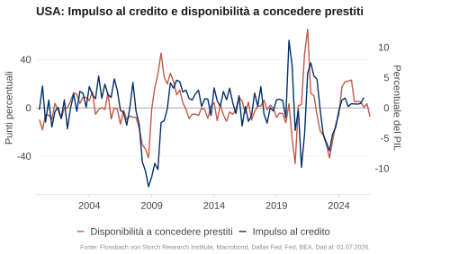
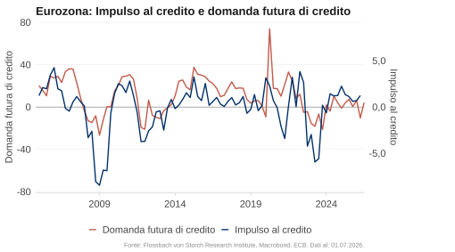
L’impulso al credito (la variazione del flusso di credito al settore privato in punti percentuali del PIL) è un buon indicatore anticipatore della domanda privata. Recentemente è stato leggermente positivo sia negli USA che nell’Eurozona, ma ha perso slancio. Poiché, in particolare nell’Eurozona, il numero di banche con un aumento delle erogazioni e della domanda di prestiti sta calando significativamente, ciò indica un prossimo impulso al credito negativo.
Indebolimento dell’impulso al credito in Cina
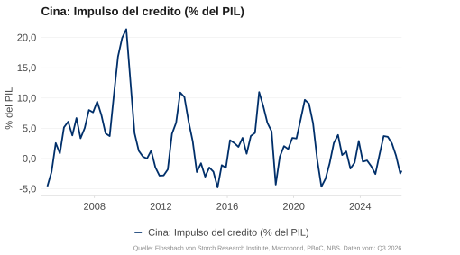
L’impulso al credito in Cina è stato leggermente positivo all’inizio dell’anno ed è tornato in territorio negativo nel primo trimestre del 2026. Ciò continua a indicare una debole domanda privata.
Consumi privati

USA: le vendite al dettaglio continuano a salire

Le vendite al dettaglio ufficiali sono aumentate del 5,2% su base annua ad aprile, un po’ più rispetto ai mesi precedenti. L’indice settimanale “Johnson Redbook Retail Sales”, che rileva le vendite di grandi magazzini e negozi al dettaglio, è salito bruscamente e mostra forti vendite al dettaglio negli USA fino a metà maggio.
USA: i debiti su carte di credito aumentano un po’ più velocemente

I debiti sulle carte di credito sono cresciuti nelle ultime settimane con la stessa rapidità degli anni precedenti. La variazione mensile è stata recentemente in linea con il consueto schema stagionale degli anni passati.
USA: le ricerche su Google indicano consumi prudenti


Spesso il consumo inizia con una ricerca su Internet. Pertanto, i dati di ricerca online sono un buon indicatore anticipatore dei consumi privati. L’intensità di ricerca per il termine “ristorante” è stata leggermente inferiore alla media degli ultimi cinque anni nelle ultime settimane, dopo essere stata precedentemente più alta. I termini della categoria “viaggi” sono stati cercati meno della media degli ultimi cinque anni per due settimane.
USA: il tasso di risparmio USA continua a calare

Il tasso di risparmio delle famiglie USA è stato in media del 5,2% dal 2000. Nelle crisi, questo tende a salire. Ad aprile, il tasso di risparmio è sceso al 2,6% ed è rimasto al di sotto della media storica. L’incertezza sulla durata della guerra in Iran e l’impatto sui prezzi dell’energia potrebbero motivare le famiglie a risparmiare di più.
Solo il sentiment dei Repubblicani rimane ottimista


La fiducia dei consumatori americani rimane in media pessimista. Il Consumer Confidence Index del Conference Board è al livello della crisi del Covid. Il Consumer Sentiment Index dell’Università del Michigan ha raggiunto valori che solitamente si verificano solo nelle recessioni. Come di consueto, i sostenitori del partito d’opposizione sono più pessimisti. I Repubblicani, al contrario, rimangono ottimisti.
Spese energetiche: USA inferiori all’Eurozona

Storicamente, l’onere energetico delle famiglie è stato più elevato negli USA che in Europa. Con la pandemia di Covid e la guerra in Ucraina, tuttavia, questo rapporto si è invertito. Entro la fine del 2024, la quota delle spese energetiche sul totale delle spese domestiche in Germania e in Francia era superiore a quella degli USA. L’attuale shock del prezzo del petrolio dovrebbe rafforzare ulteriormente questa tendenza.
Eurozona: onere energetico delle famiglie tedesche
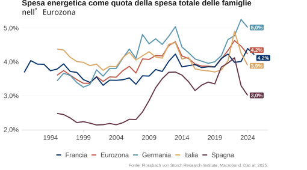
L’onere energetico delle famiglie tedesche è superiore alla media dell’Eurozona dalla metà degli anni 2000. Con lo scoppio della guerra in Ucraina è aumentato bruscamente, mentre è calato di nuovo in particolare in Spagna e in Italia. In Germania, invece, la quota delle spese energetiche sul totale delle spese domestiche è rimasta intorno al 5%.
Eurozona e Germania: il tasso di risparmio delle famiglie rimane stabile

Il tasso di risparmio rimane stabile in Germania al 10%, significativamente più alto che negli USA (2,6%). Storicamente, anche il tasso di risparmio tedesco è stato più elevato rispetto all’Eurozona. Durante la crisi del Covid è salito a quasi il 20%.
Consumo EZ: le ricerche su Google indicano prudenza in Francia e Germania


Le ricerche su Google per “ristorante” in Germania e in Francia indicano una debole domanda privata. In entrambi i paesi, l’intensità di ricerca nelle ultime settimane è stata inferiore alla media degli ultimi cinque anni nello stesso periodo dell’anno.
Consumo EZ: meno prudenza in Spagna


Mentre in Spagna l’intensità di ricerca per “ristorante” è rimasta alta quanto la media degli ultimi anni, in Italia è stata un po’ più bassa.
Il sentiment migliora solo leggermente

In Cina, il clima di fiducia dei consumatori è leggermente migliorato dall’inizio del 2025, ma rimane storicamente basso. Anche il sentiment nel settore immobiliare è depresso. Il “National Real Estate Climate Index” è in calo da tre anni.
Mercato del lavoro

USA: continua il forte aumento dei salari nominali

A maggio, i salari orari medi negli USA sono aumentati del 3,4% su base annua, ancora un po’ più lentamente rispetto al mese precedente. Nel primo trimestre del 2026, la crescita salariale è stata del 3,9% in Germania e solo dell’1,6% in Francia. In Germania e negli USA, la crescita salariale rimane al di sopra della media 2011-2019.
USA: normalizzazione della crescita salarial?

La crescita salariale secondo il Wage Tracker di Indeed Hiring Lab sembra precedere la crescita del salario mediano degli USA di circa sette mesi. Se ciò è corretto, la crescita salariale potrebbe normalizzarsi ulteriormente.
USA: debole crescita salariale per i salari bassi

Ad aprile, i salari orari negli USA sono aumentati in media del 3,8%. Gli incrementi salariali dei singoli gruppi salariali si stanno avvicinando. Nel quartile salariale più basso, i salari sono aumentati del 3,6%, nel quartile più alto del 3,7%. Ciò significa che i salari più alti non crescono più così tanto più velocemente come al picco del 2022 e aumentano solo di poco più velocemente di quelli più bassi.
Il mercato del lavoro USA è meno teso

La curva di Beveridge rappresenta la relazione tra il tasso di posti vacanti – i posti di lavoro aperti come quota della somma di quelli occupati e aperti – e il tasso di disoccupazione. Con la crisi del Covid, la curva si è spostata verso l’esterno perché, a causa delle misure politiche, nonostante i molti posti liberi, la disoccupazione è rimasta alta. Le rigidità si sono nuovamente attenuate e la curva di Beveridge è tornata al livello precedente la crisi del Covid. La situazione sul mercato del lavoro USA si è quindi normalizzata.
La crescita dell’occupazione si riprende, ma rimane debole

A maggio, il numero di posti di lavoro nel settore privato non agricolo è aumentato dello 0,5% rispetto all’anno precedente secondo il rapporto ADP, un po’ più rispetto al mese precedente. I dati ufficiali hanno mostrato una crescita annuale dello 0,5%. Il mercato del lavoro USA rimane stabile, ma la crescita dell’occupazione è ormai più lenta rispetto agli anni tra la crisi finanziaria e quella del Covid.
USA: licenziamenti e richieste di sussidi di disoccupazione nella norma


A maggio sono stati annunciati circa 97.000 tagli di posti di lavoro, un po’ più rispetto al mese precedente. Allo stesso tempo, le richieste iniziali settimanali di sussidi di disoccupazione sono recentemente aumentate leggermente a 225.000, ma sono rimaste nella fascia bassa delle fluttuazioni degli ultimi tre anni e a un livello storicamente basso. Tra il 1990 e il 2019, la media settimanale era invece di circa 350.000.
USA: offerta di lavoro in calo
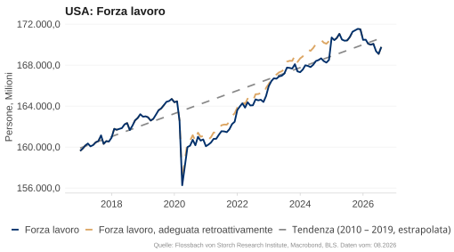
L’offerta di lavoro negli USA è stagnante dall’autunno 2024. Un aggiustamento metodologico ha aumentato la forza lavoro di 2,1 milioni di persone a gennaio 2025. Una nuova serie ricalcolata (rossa) evidenzia che la crescita si era già interrotta nell’autunno 2024. Con la politica migratoria più restrittiva di Donald Trump, l’offerta di lavoro dovrebbe continuare a ristagnare o addirittura calare.
I salari nominali aumentano più velocemente in Germania
Il Wage Tracker di Indeed Hiring Lab mostra salari nominali ancora in aumento. Ad aprile, il tasso di variazione è stato del 2,3% nell’Eurozona, del 3,2% in Germania, dell’1,1% in Francia e del 2,3% negli USA. Solo in Germania i salari aumentano più velocemente rispetto all’anno precedente.
Eurozona: mercato del lavoro teso

La curva di Beveridge, che rappresenta la relazione tra tasso di posti vacanti e tasso di disoccupazione, indica un mercato del lavoro teso. Durante la crisi del Covid, la curva si è spostata verso l’esterno poiché le misure politiche hanno fatto sì che la disoccupazione rimanesse alta nonostante i molti posti di lavoro aperti. Nel frattempo, queste rigidità si sono ampiamente attenuate e la disoccupazione è a un livello storicamente basso. Il tasso di posti vacanti è calato, ma corrisponde nuovamente alla consueta correlazione tra le due variabili.
Cina: disoccupazione giovanile molto alta

Il tasso di disoccupazione della Cina si è mosso lateralmente al 5% negli ultimi mesi. La disoccupazione giovanile, definita come il tasso di disoccupazione tra i 16 e i 24 anni, ha raggiunto il 21,3% a metà del 2023. Dopo una pausa nella pubblicazione di sei mesi, esiste una nuova statistica “senza studenti”. Questa è stata del 16,9% a febbraio.
PREZZI
Materie prime

Alti costi di trasporto marittimo per il petrolio greggio

I noli delle petroliere sono saliti a nuovi livelli record a seguito del blocco dello Stretto di Hormuz. Nonostante un recente calo, rimangono al di sopra del livello massimo del 2022 dopo l’inizio della guerra in Ucraina. Il World Container Index (WCI), che riflette i noli nel commercio di merci, rimane invece a un livello basso a causa delle persistenti sovracapacità nella costruzione di navi portacontainer.
Backwardation: previsti prezzi del petrolio in calo


Il mercato si aspetta prezzi del petrolio in calo. Le consegne a tre mesi o a un anno sono più economiche rispetto al mese corrente (front month). Questa “backwardation” segnala che l’attuale scarsità è considerata temporanea. I prezzi dei futures con consegna a un anno sono nuovamente aumentati bruscamente negli ultimi giorni, più che dopo l’inizio della guerra in Ucraina nel 2022.
Quando si normalizzerà il traffico marittimo attraverso lo Stretto di Hormuz?

La riapertura dello Stretto di Hormuz è fondamentale per l’offerta di petrolio e quindi per i prezzi del petrolio. Alla fine di maggio, i mercati previsionali scontavano ancora con il 65% di probabilità un’apertura entro la fine di giugno. L’8 giugno, tuttavia, era solo del 10%. Per fine luglio, la probabilità implicita è del 28%, per fine dicembre del 74%.
I prezzi del gas in Europa seguono un andamento simile al 2022

L’Europa rimane fortemente dipendente dalle importazioni di petrolio e gas. Dopo un rapido aumento di circa il 75%, i futures sul gas naturale olandese TTF con scadenza a un mese sono recentemente calati un po’, ma sono ancora circa il 50% al di sopra del livello di una settimana prima dell’inizio della guerra in Iran. Nella crisi energetica del 2022, i prezzi del gas in Europa erano a tratti triplicati.
USA

USA: il tasso di inflazione sale bruscamente


A maggio, i prezzi al consumo negli USA hanno continuato a salire. L’indice dei prezzi al consumo (CPI) è aumentato del 4,2% rispetto all’anno precedente, come previsto. L’inflazione core è stata del 2,9%, pari alle aspettative mediane dei partecipanti a un sondaggio mensile Bloomberg. Il forte aumento mostra in particolare gli effetti dello shock petrolifero.
Inflazione negli USA: CPI, PCE e deflatore del PIL

L’inflazione viene determinata tramite diversi indici. Il CPI rileva i prezzi al consumo, l’indice PCE le spese delle famiglie e il deflatore del PIL i prezzi di tutti i beni economici prodotti internamente. I tassi di variazione di tutti e tre gli indici hanno raggiunto un picco a metà del 2022. Ad aprile 2026, il tasso d’inflazione dell’indice PCE core (senza energia e alimentari), favorito dalla Fed, era del 3,3%.
Fattori d’inflazione: servizi ed energia

Il rincaro dei servizi rimane il fattore dominante dell’inflazione USA. Mentre il contributo dei prezzi degli alimentari rimane moderatamente positivo, l’ultimo shock del prezzo del petrolio sta ora colpendo in pieno: il contributo all’inflazione dei prezzi dell’energia è il più alto dal 2022 e spinge nuovamente verso l’alto il tasso complessivo in modo sensibile.
USA: crescente pressione inflazionistica

A maggio, i prezzi dei servizi sono aumentati del 3,5% rispetto all’anno precedente. I prezzi degli alimentari hanno continuato a salire bruscamente con un tasso di variazione annuale del 2,7%. Particolarmente forte l’aumento dei prezzi dell’energia: con un incremento del 23% rispetto all’anno precedente, sono stati così alti come l’ultima volta nel 2022.
USA: l’inflazione supercore torna a salire

La supercore è definita come l’indice dei prezzi dei servizi senza energia e costi abitativi. Sulla base dell’indice CPI, il tasso annuale dell’inflazione supercore è stato del 3,7% a maggio. Misurato dall’indice PCE, l’inflazione supercore è salita a quasi il 3,6% ad aprile. Ciò mostra che la pressione inflazionistica nel settore dei servizi rimane alta anche senza i costi abitativi.
La crescita dei prezzi degli affitti non cala più

I costi degli affitti costituiscono una gran parte dei prezzi dei servizi nel CPI e sono anche fortemente correlati con i costi per l’abitazione di proprietà. Durante gli anni del Covid, l’indice degli affitti Zillow per i nuovi contratti di locazione è stato un buon indicatore anticipatore dell’andamento degli affitti, perché gli affitti esistenti reagiscono più lentamente. Attualmente, l’indice degli affitti Zillow, con circa l’1,7%, segnala una crescita degli affitti più lenta rispetto all’indice degli affitti CPI in ripresa, che si attesta intorno al 2,9%.
USA: l’inflazione potrebbe continuare a salire

L’indice dei prezzi nel PMI dei servizi ISM anticipa l’inflazione dei prezzi al consumo di circa sei mesi. Se questa correlazione sarà confermata, l’inflazione dovrebbe continuare a salire nei prossimi mesi.
Eurozone

Inflazione in aumento nell’Eurozona


A maggio, l’IPCA dell’Eurozona è aumentato del 3,2% su base annua, l’inflazione core (senza energia e alimentari) è stata del 2,5%. In Germania (2,7%), Francia (2,8%), Italia (3,3%) e Spagna (3,6%), l’inflazione a maggio è stata nuovamente chiaramente superiore al target del 2%.
Rincaro di servizi ed energia

Fino alla fine del 2022, sono stati soprattutto i prezzi di energia e alimentari a contribuire all’inflazione. Attualmente, il rincaro è guidato prevalentemente dall’aumento dei prezzi dei servizi e, in misura minore, anche dagli alimentari e di nuovo dall’energia. Nel frattempo, tuttavia, i prezzi dell’energia hanno avuto un effetto frenante sull’inflazione per diversi mesi.
La pressione inflazionistica rimane
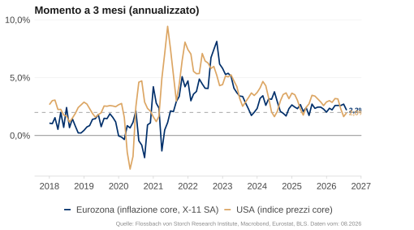
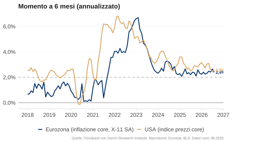
I tassi di inflazione core annualizzati a 3 e 6 mesi mostrano la pressione inflazionistica a breve termine. A maggio, nell’Eurozona sia il tasso a 3 che quello a 6 mesi erano al 2,4%. Negli USA, il tasso a 3 mesi era del 3,2% e il tasso a 6 mesi del 2,9%.
Aspettative di inflazione

Aspettative di inflazione dei consumatori volatili


A maggio 2026, le aspettative di inflazione dei consumatori USA per i prossimi dodici mesi erano del 4,8% (Università del Michigan) e del 3,6% (New York Fed). Nell’Eurozona, le famiglie si aspettavano a febbraio secondo la BCE un valore mediano del 4% per l’anno a venire e del 2,9% per i prossimi tre anni.
L’energia torna a rincarare …


I prezzi degli alimentari e dell’energia vengono esclusi per analizzare l’andamento dell’inflazione di fondo. Tuttavia, per la percezione del benessere e il comportamento di voto, proprio questi prezzi sono decisivi. Dopo il forte aumento del 2021, i prezzi dell’energia si sono stabilizzati, ma i prezzi degli alimentari continuano a salire. Lo shock petrolifero ha ora spinto nuovamente verso l’alto i costi energetici: negli USA sono del 24% sopra il livello dell’elezione di Trump (nov. 2024), nell’area dell’euro sono del 9%.
… il che dovrebbe danneggiare i Repubblicani USA

A novembre 2026 verranno rieletti l’intera Camera dei rappresentanti e 35 dei 100 seggi del Senato. Nei mercati previsionali, una maggioranza repubblicana alla Camera è attualmente scontata solo al 19%. Per il Senato, la probabilità è recentemente tornata a salire e si attesta attualmente intorno al 56%.
Cina: timori di deflazione

Il tasso di inflazione cinese è stato inferiore all’1% dalla metà del 2023. Ad aprile è stato dell’1,2%, l’inflazione core (senza alimentari ed energia) è stata dell’1,1%. Ciò sottolinea la debole dinamica economica del paese. Gli alti prezzi del petrolio e dell’energia dovrebbero aumentare ulteriormente il tasso di inflazione, almeno temporaneamente.
ASPETTATIVE SUI TASSI
E IMPULSO FISCALE
USA: tasso reale in calo

Il tasso reale è la differenza tra tasso nominale e inflazione (attesa). Mentre si può leggere il tasso nominale sul mercato, per l’inflazione attesa bisogna ricorrere a una stima. A seconda dell’approccio scelto, il tasso reale per l’economia USA è attualmente tra -1,0% e 0,3%. In alternativa si può leggere sul mercato il rendimento dei titoli di Stato indicizzati all’inflazione (TIPS negli USA). Per una durata di due anni, il tasso reale è positivo da aprile 2022 ed è salito recentemente a circa l’1,1%.
Aspettative sui tassi volatili


Sui mercati dei futures è scontato un aumento dei tassi di massimo 25 punti base per la Fed entro dicembre 2026. Nell’area dell’euro sono scontati aumenti dei tassi di circa 50 punti base. Il livello dei tassi atteso per fine anno in Europa rimane comunque significativamente inferiore a quello degli USA.
Cina: politica monetaria espansiva

La banca centrale cinese gestisce la propria politica monetaria principalmente attraverso tre strumenti: il tasso reverse repo a 7 giorni, il Loan Prime Rate (LPR) a un anno delle banche commerciali e il Reserve Requirement Ratio (RRR). Negli anni passati ha ridotto più volte tutti e tre i tassi per fornire più liquidità e sostenere così la congiuntura attraverso l’espansione del credito. Per il 2026 segnala una politica monetaria ancora moderatamente allentata.
Moderati impulsi fiscali per il 2026

Le ultime stime del FMI hanno cambiato in particolare il quadro per la Cina nel 2026. Invece di un impulso fiscale neutrale precedentemente atteso, viene ora previsto un forte impulso positivo, sostenuto da ampie misure statali per il sostegno della domanda interna. Negli USA l’impulso fiscale è rimasto negativo nel 2024 e 2025, per il 2026 è tuttavia atteso un leggero allentamento. Nell’Eurozona l’impulso fiscale si sposta dal 2025 al 2026, poiché in particolare il programma tedesco di armamenti e infrastrutture diventerà efficace solo con ritardo.
Previsioni congiunturali 2026
| Mom. | Fiscale | Finanz. | FvS-RI | Consenso Bloomberg | |
|---|---|---|---|---|---|
| USA | 0 | + | 0 | 2,0 % | 2,1 % |
| CN | 0 | + | 0 | 4,6 % | 4,6 % |
| EA | - | + | 0 | 0,6 % | 0,8 % |
| DE | - | + | 0 | 0,4 % | 0,6 % |
Le nostre previsioni di crescita per il 2026 si basano su una valutazione qualitativa del momento economico, dell’effetto sulla crescita della politica fiscale e delle condizioni di finanziamento, compresa la politica monetaria. Queste previsioni devono essere intese come valori orientativi e non come previsioni puntuali precise.
USA: consumi stabili, una solida situazione del mercato del lavoro e salari in crescita meno sostenuta giustificano il momento positivo invariato. Dal punto di vista della politica fiscale non è prevista alcuna consolidamento del bilancio. Al contrario, la linea rimane espansiva.
Dal punto di vista della politica monetaria non sono più previsti tagli dei tassi fino alla fine dell’anno. La guerra in Iran aumenta l’incertezza e il rischio di recessione.
Cina: Il persistente indebolimento del settore immobiliare pesa sulla domanda interna. L’industria stabilizza la congiuntura attraverso le esportazioni, tuttavia in particolare tramite sussidi, il che indica sovracapacità e ha un effetto deflazionistico. Da politica fiscale e monetaria sono da attendersi lievi impulsi.
Eurozona / Germania: il momentum negativo in Germania e nell’Eurozona a seguito degli effetti dello shock del prezzo del petrolio su domanda e industria viene parzialmente compensato a livello europeo dalla crescita più dinamica in Spagna e Italia. La Spagna sta tuttavia indebolendosi sempre più. Programmi congiunturali finanziati dal debito dovrebbero dare un impulso nel 2026. Senza deregolamentazione, tuttavia, gli investimenti tedeschi in infrastrutture e armamenti avranno probabilmente solo un debole effetto. L’aumento dei prezzi di petrolio e gas e un euro debole pesano ulteriormente sulla congiuntura. Date le pessime prospettive aziendali e l’aumentata incertezza abbiamo ridotto nuovamente le nostre previsioni.
Note legali
Le informazioni contenute e le opinioni espresse in questo documento riflettono le valutazioni dell’autore al momento della pubblicazione e possono cambiare in qualsiasi momento senza preavviso. Le indicazioni relative a dichiarazioni rivolte al futuro riflettono la visione e le aspettative future dell’autore. Le opinioni e le aspettative possono differire dalle valutazioni presentate in altri documenti di Flossbach von Storch SE. I contributi vengono forniti solo a scopo informativo e senza obbligo contrattuale o di altro tipo. Le informazioni e le valutazioni contenute non costituiscono consulenza sugli investimenti o altra raccomandazione. È esclusa ogni responsabilità per la completezza, l’attualità e la correttezza delle indicazioni e delle valutazioni fornite. L’andamento storico non è un indicatore affidabile dell’andamento futuro.
Tutti i diritti d’autore e altri diritti, titoli e pretese su, per e da tutte le informazioni di questa pubblicazione sono soggetti illimitatamente alle disposizioni rispettivamente vigenti e ai diritti di proprietà dei rispettivi proprietari registrati. Non acquisite alcun diritto sul contenuto. Il copyright per i contenuti pubblicati e creati dalla stessa Flossbach von Storch SE rimane esclusivamente di Flossbach von Storch SE. Una duplicazione o un utilizzo di tali contenuti, integralmente o in parte, non è consentita senza il consenso scritto di Flossbach von Storch SE. Le ristampe di questa pubblicazione e la sua messa a disposizione del pubblico richiedono il preventivo consenso scritto di Flossbach von Storch SE. © 2026 Flossbach von Storch. Tutti i diritti riservati.